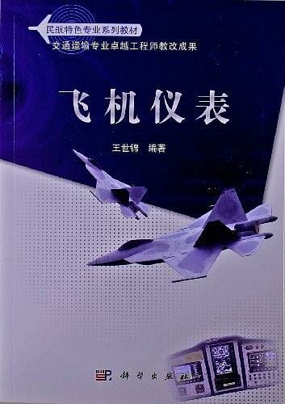

第一章 绪论
- 航空仪表是飞机上全部仪表的总称。
- 现在的航空仪表除为飞行员提供驾驶飞机用的目视显示数据外，还要为各种导航系统、自动飞行控制系统和飞行数据记录器等机载设备提供各种输入数据。
- 1929 年 9 月，美国飞行员 J. H. 杜立特凭借仪表和无线电导航设备安全完成首次仪表飞行。
- 完成仪表飞行的基本仪表包括：空速表、高度表、陀螺地平仪、航向陀螺仪、升降速度表和转弯倾斜仪。
- 航空仪表的发展经历了机械仪表、电气仪表、机电式伺服仪表、和综合指示仪表阶段。
- 直读式仪表通常是由敏感元件）或称测量元件，直接感受被测物理量的元件）、中间环节（放大传动机构）和指示装置组装在一起的单一参数测量仪表，如气压式仪表等。有的直读式仪表则直接由敏感元件来带动指示装置，如磁罗盘和航向陀螺仪。
- 直读式仪表的最大优点是结构简单、工作可靠、成本低廉，缺点是因推动指针移动的能量来自敏感元件的信号源，能量很小，所以表的灵敏度较低，指示误差较大。此类仪表仍大量用于一些低空飞行的轻型飞机上，而且几乎在所有飞机上都还用它们作为应急仪表。
- 电气仪表通常称为远读式仪表，是指仪表传感器和指示器没有组装在同一个表壳内，它们之间的工作关系是通过电信息传递来实现的，相距较远。大多数发动机仪表均属此类。还有一些仪表利用远距同步传输系统来实现远读的功能。
- 远读式仪表的基本结构是由传感器和指示器两部分组成。传感器包括敏感元件和变换装置，远离仪表板；指示器包括接收装置和指示装置，在仪表板上，两者之间通过信号传输线路构成工作系统。变换装置和接收装置构成仪表的中间环节，它的作用和直读式仪表相比，实现了仪表信号的远距离传递，其余作用和机械仪表阶段的中间环节相同。
- 电气传输代替机械传动，可以提高仪表的反应速度、准确程度和传输距离，将仪表的指示装置与其它部分分开，使仪表板上的仪表体积大为缩小。另外，一些表的敏感元件（传感器部分）因远离驾驶舱，减少了干扰（如磁传感器和陀螺传感器），提高了敏感元件的测量精度。远读式仪表也有一些缺点：它使整套仪表结构复杂、部件增多（主要是中间环节）、质量增加、工作可靠性降低。
- 伺服系统又称为随动系统（亦称反馈系统），是一种利用反馈原理来保证输出量与输入量相一致的信号传递装置。
- 利用伺服系统原理构成的仪表，也称闭环仪表。对仪表信号，采用伺服机构能减少摩擦力矩对敏感元件的影响，进行力矩放大，信号能量得到放大，提高了仪表测量和指示精度。输出多路信号供各系统使用，有利于仪表的综合化和自动化。伺服仪表也具有远读的特点。目前大多数航空仪表均采用伺服系统来传递各种信号。
- 仪表的综合化有两条途径：
- 传感器综合化
- 把原理不同而功能类似的几个传感器组合在一起，以达到相互矫正和提高仪表性能的目的。如：由磁罗盘和航向陀螺仪组成的陀螺磁罗盘；
- 把少量公用的原始信息传感器集中起来，通过计算机计算，输出为数众多的不同信号。如：大气数据计算机；
- 显示器综合化
- 把有关的参数集中在一个显示器内显示。
- 传感器综合化
- 航空仪表按功能可分为：
- 飞行仪表
- 指示飞行器在飞行中的运动参数（包括线运动和角运动），主要由利用大其特性的各种气压式仪表、利用陀螺特性的各种陀螺仪表和利用物体惯性的加速度（过载）仪表等；
- 发动机仪表
- 用于检查和指示发动机工作状态。按被测参数区分，主要有转速表、压力表、温度表和流量表等。
- 现代发动机仪表还包括振动监控系统；
- 燃油是直接供发动机使用的，故指示燃油油量的油量表通常也归属于发动机仪表；
- 其它设备仪表
- 飞行仪表
- 航空仪表按工作原理可分为：
- 测量仪表
- 用于测量飞机在飞行中的运动参数，包括大气数据系统仪表、姿态系统仪表、航向系统仪表和指引系统仪表等；
- 计算仪表
- 指飞机上的一些领航（或称导航）和系统性能方面的计算仪表（或称计算器、计算机）；
- 飞机上使用计算仪表是因为一些导航数据（或设备性能数据）不是测量出来的，而是根据某些飞行参数（或设备工作状态参数）计算出来的，是多参数输入、输出仪表；
- 计算方式有两种：一是采用模拟计算，二是采用数字计算；
- 调节仪表
- 指飞机上属于仪表专业人员维护范围的一些自动化控制系统设备，如自动驾驶仪、马赫配平系统、调整片自动配平系统、倾斜阻尼器、偏航阻尼器和自动油门系统等；
- 自动控制系统由控制器和控制对象（被调节对象）组成。控制量只取决于输入量的系统称为开环控制系统，控制量取决于输入量与反馈量的差值（称偏差）系统，称为闭环控制系统。
- 测量仪表
- 一些不能直接测量出指示参数的物理量，虽然也是通过计算求得的，但不叫计算仪表，称它为间接测量仪表。
- 有正副驾驶员的飞机，飞行仪表基本上是双套的，其余仪表为单套。
- 地平仪、航向罗盘、高度表、空速表是飞行中驾驶员所使用的仪表中最重要的四块仪表。
- 地平仪是各种飞行参数变化的源头。
- 稳定性是航空仪表的重要工作特性，表示输入量变化后，输出量能稳定在相应的数值上。正常工作的航空仪表都是稳定系统。
- 测量仪表具有三种工作状态：
- 静稳态
- 输入信号不变，输出信号也不变时的工作状态；
- 动稳态
- 输出信号与输入信号同步变化的工作状态；
- 动态
- 仪表在过渡过程时间内的工作状态；
- 静稳态
- 伺服系统（包括自动驾驶仪、马赫配平系统和自动油门系统等）的工作状态：
- 稳定状态
- 控制器按指令要求将控制对象稳定在指令基准位置的工作状态；
- 操纵状态
- 指令信号改变时的系统工作状态；
- 稳定状态
- 系统的静态特性曲线为一条直线，称为线性系统，否则称为非线性系统。
- 处于静稳定状态的航空仪表，可以通过三种方法减小误差：
- 利用仪表本身的误差调整装置减小误差；
- 利用建立的误差修正卡修正误差；
- 采用计算方法修正非标准情况时的误差。
- 不能消除的误差称为剩余误差。
- 仪表指示值与修正量的代数和等于实际值，即：实际值＝指示值＋修正量
- 具有稳定性工作状态的航空仪表，其过渡过程在逼近至稳定值时需要有一个过渡过程。
- 过渡过程的质量指标有：
- 过渡过程时间
- 输入变化后到输出稳定下来所需的时间；
- 超调量
- 输入变化后，输出量第一次超过稳定值的幅度；
- 振荡次数
- 输入变化后，输出量在过渡过程时间内振荡的次数。
- 过渡过程时间
- 描述灵敏性的常用参数
- 灵敏度
- 变化量变化一个单位时，输出量所产生的相应变化量；
- 迟滞
- 表明输入信号增大过程与减小过程期间特性曲线不重合的程度；
- 漂移
- 输入没有变化而输出量有变化的情况；
- 阈值
- 系统有最小输出值时所对应的最小输入值；
- 分辨率
- 输出开始变化时所用的输入增量；
- 死区
- 无输出时的输入变化区域，即仪表工作不灵敏区域。
- 灵敏度
- 误差按其产生原因可分为：
- 方法误差
- 又称为理论误差，凡是在测量结果的表达式中没有得到反映的因素，而实际上这些因素又起作用时所引起的误差；
- 工具误差
- 指测量仪表在构造上、制造工艺上或调整上的不完善所引起的误差。
- 方法误差
- 误差按其出现的规律可分为：
- 系统误差
- 在相同条件下，多次测量同一量时，误差的绝对值和符号保持恒定，或测试条件改变时按一定规律随条件变化的误差；
- 随机误差
- 在相同条件下，多次测量同一量时，每一次测量误差的大小和符号都是随机的、不可预知的；
- 粗大误差
- 显然偏离实际值的误差，没有任何规律可循。主要由操作者注意力不集中、过度疲劳操作出错或偶然一个外界干扰等引起的。
- 系统误差
- 误差按工作条件可分为：
- 基本误差
- 在规定的温度、湿度、频率、波形、放置方法和无外界电磁场干扰等正常工作条件下，由于仪表本身的缺点所产生的误差；
- 附加误差
- 由于外界因素的影响和仪表放置不符合规定等原因所产生的误差。
- 基本误差
- 附加误差有些可以消除或限制在一定范围内，而基本误差却不可避免。
- 误差按计算方式可分为：
- 绝对误差
- 测量某物理量所得到的测量值与该量的真实值之差；
- 相对误差
- 绝对误差与真实值之比；
- 引用误差
- 仪表的绝对误差与最大读数的百分比。
- 绝对误差
第二章 传感器原理
- 传感器是将能够感受到的及规定的被测量按照一定的规律转换成可用输出信号的器件或装置，通常由敏感元件和转换元件组成。
第三章 发动机仪表
- 航空上常用的压力单位：
- 工程大气压
- 在 1 平方厘米的面积上作用了 1 千克力的压力，用 1kgf/cm² 表示；
- 毫米液柱
- 以液柱汞或水的高度来表示压力的大小，一般常用毫米汞柱（mmHg）或毫米水柱(mmH2O）表示；
- 磅力/英寸 ²（英制）：在 1 平方英寸的面积上作用 1 磅力的压力；
- 巴
- 1 平方厘米的面积上作用 1 达因的压力，用 bar 表示，毫巴为其千分之一；
- 帕斯卡
- 1 平方米的面积上作用 1 牛顿里，用 Pa 表示。
- 工程大气压
- 压力单位换算表
| 单位名称 | 帕斯卡 / (N/m²) | 巴 / bar | 标准大气压 / atm | 毫米汞柱 / mmHg | 英寸水柱 / inH2O | （磅/英寸 ²) / psi |
|---|---|---|---|---|---|---|
| Pa | 1 | 1×10^-5 | 9.87×10^-6 | 7.5×10^-3 | 4×10^-3 | 1.45×10^-4 |
| kgf/cm² | 9.8×10^4 | 0.98 | 0.967 | 735.56 | 393 | 14.2 |
| bar | 1×10^5 | 1 | 0.987 | 750.06 | 401 | 14.5 |
- 进气压力是指气体进入发动机气缸前在进气管处的压力。为了使进气压力较为直接反映填充量的变化、反映发动机的功率，所以在测量进气压力时采用真空膜盒测量绝对压力。
- 进气压力表测量活塞式发动机进气管中的进气压力，它与转速表配合，可以反映活塞式发动机的功率。测量单位是毫米汞柱或英寸汞柱。
- 电动压力表用来测量燃油压力、滑油压力、螺旋桨扭矩和储压器压力等，测量单位是 kgf/cm² 或 lb/in²。电动压力表又分为直流二线式、交流二线式、交流电动式、交流感应式等。目前飞机上大多采用交流二线式压力表，这种压力表的传感器没有接触摩擦，工作可靠性好。
- 推力是发动机所产生的推动飞行器运动的力，是气流作用在发动机内、外表面上各种力的合力。
- 由于推力与发动机进气压力和涡轮出口压力有关，与风扇转速 N1 有关，因此测量推力的仪表就有压力比表、压力差表和 N1 转速表。
- 推力是压力和飞行马赫数的函数，即：推力＝ f(涡轮出口全压 ÷ 压气机进口全压, 飞行马赫数)。当飞行马赫数不变时，发动机的推力只与压力比有关。
- 飞机上的温度表有：
- 喷气温度表
- 测量涡轮发动机喷气温度；
- 滑油温度表
- 测量发动机滑油温度；
- 座舱温度表
- 测量座舱温度；
- 大气温度表
- 测量大气温度；
- 全受阻温度传感器
- 测量全受阻温度。
- 喷气温度表
- 热电偶式温度表是利用热电效应制成的测温仪表。
- 利用热电偶实现被测温度和热电势之间的变换，因此可以用来测量较高的温度。
- 利用导体或半导体的电阻随温度而变化的特性制成的温度表叫做电阻式温度表。
- 在飞机上广泛应用于测量温度较低的温度。
- 通过测量喷气发动机的涡轮轴转速、活塞发动机的曲轴转速、直升机的旋翼转速等，可以了解发动机的功率和推力，可以确定发动机所承受的运动负荷和性能负荷。
- 目前飞机上使用较多的是转速表是磁转速表和数字式磁电转速表。
- 目前飞机上常用的数字式转速表有磁电式和光电式两种。
- 飞机发动机所用的燃料，一般是煤油或汽油。油量表就是测量飞机邮箱内煤油或汽油容积或重量的仪表。储存燃油的油箱通常安装在机翼内，个别飞机也有安装在机身中的。
- 油量表目前有三种形式：
- 利用浮子将油面高度转换成浮子位移的浮子式油量表
- 一般用于测量汽油、滑油和液压油的油量。在飞机俯仰、倾斜或有加速时，由于油面相对油箱倾斜，出现指示误差。只有在飞机平飞时判读指示才准确；
- 将油面高度转换成电容量大小的电容式油量表
- 利用圆筒形电容传感器把油面高度转变成电容量，再利用自动平衡电桥测量电容来表示相应油量；
- 利用测量管道中的涡轮转速来间接测量燃料流量，从而指示油箱剩余流量的叶轮式油量表（或耗油量表）
- 利用浮子将油面高度转换成浮子位移的浮子式油量表
- 既能测量全部油箱油量又能测量各组油箱分油量的油量表，称为总油量表。
- 振动载荷系数（G）是发动机振动时传到飞机上的最大力与发动机本身重力的比值；也是振动时最大加速度与重力加速度的比值，它与振幅之间有一定的关系。
- 在国产和苏制飞机上，发动机测振仪均以振动载荷系数 G 值来表达振动强度。一般轻型飞机允许 G ＜ 3，重型飞机 G ＜ 5。民航飞机允许 G 值为 3-4（折合 2-3mil）。在英美制造的飞机上，发动机测振仪均以全振幅 S 来表达振动强度。以密尔（mil, 1mil ＝ 0.001in）为单位。但一般指出相对全振幅，它和实际全振幅之间还有一个比例系数。此外，还有用 m/s 和 ft/s 作为测量单位的。
- 发动机振动指示器是一种监视仪表，使用前应该用试验按钮进行检查；使用中若警告灯亮，表示振动过大，应结合其它仪表指示判断故障，迅速做出处置。
- 燃油在单位时间内流过管路某一截面积的质量（或体积）就是流量表所要测量的数值。它反映了燃油消耗速度，测量单位为 kg/h 或 lb/h。
- 燃油耗量是指发动机工作过程中燃油在任一时间内所消耗的数量，测量单位为 kg 或 lb。从油箱的总油量中减去消耗量，即得总剩余油量。
- 流量有两种：
- 体积流量
- 流体在管路中单位时间内流过的体积，它等于流速与管路横截面积的乘积；
- 质量流量
- 流体在管路中单位时间内流过的质量，它等于体积流量与流体密度的乘积。
- 体积流量
- 叶轮式流量表是体积流量表，它包括瞬时流量表和总流量表两部分。
- 角动量式流量表是质量式流量表，它测量的是瞬时流量。
- 由于角动量式流量表直接测量燃油质量流量，与流体的密度、温度等参数无关，测量精度高，所以被广泛使用在大中型飞机上。
- EICAS（Engine Indication and Crew Alerting System，发动机指示与机组告警系统）具有下列主要优点：
- 全程监控和多种显示功能
- 具有存储信息的功能
- 采用彩色显示提供鲜明的视觉分级报警
- 系统正常工作时，显示白色、淡蓝色或绿色；
- 在不正常的工作状态时，显示黄色（或琥珀色）、红色；
- 当接近极限值（即进入黄区）时，则指针、数字及其方框都由白色变为黄色；
- 当达到或超过极限值后，则指针、数字及其方框都变成红色；
- 当（液压系统）油加注过满或欠加油时，均显示粉红色的提示字符；
- 文字信息可根据报警等级用红色、黄色及白色加以区分；
- 在出现警告或告诫信息的同时，相应红色主警告灯或琥珀色的主警告灯亮，并有相应的声响警告。
- EICAS 700 系统由两个 EICAS 计算机、两个彩色阴极射线管显示器和两块控制板（显示选择板和维护面板）组成的。这些组件连同取消/再显示电门，以及正、副驾驶员主告诫灯，协同完成 EICAS 的各种功能。
- 在 EICAS 700 系统中，EICAS 计算机是整个系统的核心功能部件，左 EICAS 计算机为主用，右 EICAS 计算机处于热等待状态。EICAS 计算机主要执行两重任务，其一是接收处理飞行机组所要求的全部发动机信息并显示必要的参数；其二是接收处理离散和模拟数据及从飞机相关子系统来的 ARINC 429 数据，用以显示机组警告信息、系统状态信息和维护信息。
- 机组警告信息分三级：警告（告警）、注意（告诫）和提醒（咨询）。
- EICAS 的模拟输入信号
| 信号形式 | 相关设备 |
|---|---|
| 直流电压 | 辅助动力装置滑油油量传感器、刹车温度传感器 |
| 直流电压比 | 发动机阀门位置传感器、配平阀门位置传感器、舱门位置传感器等 |
| 测温电阻 | 座舱温度传感器、热交换器内外温度传感器、滑油温度和排气温度传感器 |
| 直流差分电压 | 备用蓄电池电流测出装置、乘务舱氧气压力传感器等 |
| 单相交流电压 | 利用 EICAS 内部计数器和整流器、测电功率 |
| 三相交流电压 | 各传感器中三相同步发送器测舱面位置 |
| 脉冲 | 燃油流量传感器 |
| 转速 | N1 及 N2 转速传感器 |
- EICAS 的数字输入信号
| 大气数据计算机（ADC） | 1 台 | 飞行管理计算机（FMC） | 2 台 |
|---|---|---|---|
| 无线电高度表 | 2 套 | 发动机电调装置（EEC） | 2 台 |
| 推力管理计算机（TMC） | 1 台 | 发动机振动监控装置 | 1 台 |
| 近地警告系统 | 1 台 | 维修显示控制板 | 1 个 |
- EICAS 有三种显示方式：
- 工作方式
- 按飞行中的实际需要显示发动机参数和机组警告信息，并对发动机和飞机系统进行全程连续监控；
- 状态方式
- 提供与飞机放飞的适航准备状态有关的系统信息，并以模拟形式或以表格形式显示在下显示器上；
- 维护方式
- 上显示器显示紧凑的全部发动机的主要和次要参数，而下显示器显示维护页面和维护信息。
- 工作方式
- 瞬时事件记录（Event Record）按钮的功能是：当发动机工作时，按压这个按钮，可同时记录环控、电源/液压、性能/APU 格式参数的瞬时值，并将这些数据存储在人工事件非易失存储器中。
- 维护面板通过空/地继电器与显示选择板相连，因此，维护面板只有当飞机停留在地面时，才起控制作用；维护面板的另一个特点是它没有逻辑部件和电源输入，因而，当显示选择板失效后，维护面板也随之不起任何控制作用。
第四章 大气数据仪表
- 大气数据仪表是指不能直接测量出飞机所需要的飞行参数，而是通过测量飞机与大气之间的作用力及飞机所在位置的大气参数（如大气静压和温度等），再根据大气参数与飞机参数的特定关系进行换算，才能在相应的仪表上指示出所需要的飞行参数的仪表。
- 大气数据仪表主要包括高度表、指示空速表、真空速表、马赫数表、升降速度表和大气温度表等。
- 大气层随高度不同表现出不同的特点，依次分为：
- 对流层：上边界离地高度在中纬度区 10-12㎞，赤道地区 17-18㎞，两极地区 7-8㎞。季节不同，对流层的厚度也不同，夏季的厚度比冬季高；
- 平流层：上边界离地高度约 30㎞，温度基本保持-55℃ 不变，因此也叫同温层；
- 中间层：上边界离地高度 90㎞；
- 电离层：上边界离地高度 800㎞；
- 散逸层：上边界离地高度 2000-3000㎞。
- 国际标准大气（ISA, International Standard Atmosphere）的数据是用地球北纬 35°-60° 地区（主要是欧洲）的平均大气数据进行修正得来的。
- 标准大气的基准是海平面高度，温度为 15℃，压强为 1013.25hPa（百帕，760mmHg），密度为 1.225㎏/m³，音速为 340.294m/s。
- 气体的惯性与气体的密度有关。密度大，惯性大，反之就小。
- 在同一飞行速度下，低空时飞机上产生的空气动力（包括机翼上的升力和阻力）比高空时要大。
- 空气的黏性即是空气自身相互黏滞或牵扯的特性。实际上，黏性是流体内部相邻两层间的内摩擦。
- 黏性和温度有关，温度高，空气分子的不规则运动加剧，空气的黏性大，反之就小（与液体相反）。
- 压缩性是指在压力（压强）的作用下或温度改变的情况下，空气改变自己的密度和体积的一种特性。空气的压缩性和音速一样，也是在高速飞行时必须考虑的一种特性。低速时（马赫数 M ＜ 0.3），可以认为空气是不可压缩的，即可以认为密度是一个不变的数值。
- 气体的可压缩性越大，音速越小；而气体的可压缩性越小，音速越大；在不可压缩流体中，音速将趋于无穷大。
- 飞机上有两种高度表，分别是测量真实高度的无线电高度表和测量气压高度的气压高度表。
- 飞机的飞行高度是飞机在空中距某一个基准面的垂直距离。飞行中使用的飞行高度有以下四种：
- 相对高度：飞机从空中到某一既定的机场地面的垂直距离
- 起飞时或降落时必须测量相对高度；
- 真实高度：飞机从空中到正下方地面目标上顶的垂直距离
- 民用飞机在起飞、进近、着陆时，必须知道真实高度；
- 绝对高度：飞机从空中到海平面的垂直距离
- 在气压较低的机场，无法利用气压高度表测量相对高度进行起飞降落时，可以利用绝对高度；
- 标准气压高度：飞机从空中到标准气压平面（即大气压力等于 760mmHg 的气压面）的垂直距离
- 飞机在加入航线飞行时可利用标准气压高度；在场面气压低的机场，无法用气压高度表测量相对高度进行起飞降落时，也可利用标准气压高度。
- 相对高度：飞机从空中到某一既定的机场地面的垂直距离
- 气压高度表的使用
- 规定过渡高度和过渡高度层的机场
- 航空器起飞前，应当将机场 QNH（Query Normal Height，修正海平面气压高度）的数值对正航空器上气压高度表的固定指标；航空器起飞后，上升到过渡高度时，应当将航空器上气压高度表的气压刻度 1013.2hPa 对正固定指标。航空器着陆前，下降到过渡高度层时，应当将机场 QNH 的数值对正航空器上气压高度表的固定指标；
- 规定过渡高和过渡高度层的机场
- 航空器起飞前，应当将机场场面气压的数值对正航空器上气压高度表的固定指标；航空器起飞后，上升到过渡高时，应当将航空器上气压高度表的气压刻度 1013.2hPa 对正固定指标。航空器降落前，下降到过渡高度层时，应当将机场场面气压的数值对正航空器上气压高度表的固定指标；
- 在没有规定过渡高度或过渡高和过渡高度层的机场
- 航空器起飞前，应当将机场场面气压的数值对正航空器上气压高度表的固定指标；航空器起飞后，上升到 600 米高时，应当将航空器上气压高度表的气压刻度 1013.2hPa 对正固定指标。航空器降落前，进入机场区域边界或者根据机场空中交通管制员的指示，应将机场场面气压的数值对正航空器上气压高度表的固定指标；
- 高原机场
- 航空器起飞前，当航空器上气压高度表的气压刻度不能调整到机场场面气压的数值时，应当将气压高度表的气压刻度 1013.2hPa 对正固定指标（此时高度表所指的高度为假定零点高度）。航空器降落前，如果航空器上气压高度表的气压刻度不能调整到机场场面气压的数值，应当按照着陆机场空中交通管制通知的假定零点高度（航空器接地时高度表所指示的高度）进行着陆。
- 规定过渡高度和过渡高度层的机场
- 气压高度表的误差
- 机械误差
- 由于高度表在构造、材料、制造上的缺陷及使用中的磨损、变形等引起的误差；
- 方法误差
- 气压方法误差：高度表测量高度基准面的气压不符合标准大气条件而引起的误差；
- 气温方法误差：高度表所测量高度基准面的气温及气温垂直递减率不符合标准条件而引起的误差。
- 机械误差
- 在 ISA 条件下，正确校准后的气压式高度表指示的是在 MSL（Mean Sea Level，平均海平面）之上的真实高度。非标准气压条件下应使用当地修正气压来进行校准。如果当时温度高于 ISA，真实高度将高于指示高度；如果当时温度低于 ISA，真实高度将低于指示高度。当温度低于 ISA 温度时，真实高度与指示高度之间的不一致可能会导致飞机的越障高度不够。在温度极低的情况下，飞行员需要参考《ICAO 低温误差表》增加适当的温度修正量，使用表中标注的 IFR（Instrument Flight Rules，仪表飞行规则）高度以保证在限制条件下的地形及越障高度。
- 飞行器飞行高度的变化率称为升降速度，即单位时间内飞行高度的变化值。升降速度也称为垂直速度或升降率。通过测量大气压力的变化率来反映飞机升降运动速度的仪表叫做升降速度表，是基本飞行仪表之一。
- 飞机上常用的是压差式升降速度表。
- 升降速度表只有在等温和毛细管两端的压力差保持在动平衡的条件下，才能准确地指示出飞机的升降率。
- 升降速度表主要有气温误差和延迟误差，二者都是方法误差。
- 飞机外部气温、表壳内部气温和毛细管中平均气温三者不等或者分别发生变化，是升降速度表产生的误差，叫做气温误差。
- 飞机升降速度跃变时，升降速度表需要经过一段时间，才能指出相应的数值，在这段时间内，仪表指示值与飞机的升降率实际值之差，叫做延迟误差。自升降速度开始跃变到指示接近相应的稳定值所经过的时间，叫做延迟时间。延迟误差不仅与毛细管的长短和粗细有关，也与飞机升降速度和飞行高度有关系。飞机升降速度越大，延迟误差也越大，延迟时间越长。飞机在高空飞行时，延迟时间超长；低空飞行时，延迟时间则略短。
- 颠簸气流可造成指针上下摆动，摆动时的读数可取其平均值。在颠簸气流中参考高度表可以有所帮助，因为高度表不像升降速度表那样易受扰动。
- 修正高度时，修正量过大会造成飞机修过所需的高度，而过小又不能及时回到目标高度。通常应该调整俯仰姿态，是升降率大概为高度偏差的两倍（但不宜超过乘客舒适度）。例如，如果飞机的高度偏差为 100 英尺，尅有使用 200FPM（英尺每分钟）的升降率进行修正。
- 在爬升或下降期间，通过参考升降速度表，可以是飞机以需要的升降率来改变高度。同时，要保持升降速度表上的升降率，必须配合俯仰姿态和功率的调整。
- 在施加了操纵力之后，如果升降速度表的指示和预期值之间的偏差大于 200FPM，则操纵过量。
- 当使用没有校准的指示器进行俯仰控制时，应该考虑它的固有误差。
- 空速是飞行器相对周围空气的运动速度。测量和显示空速的仪表称为空速表，是重要的飞行仪表之一。
- 常用的空速表有指示空速（IAS，Indicated Air Speed，也称表速）表、真实空速（TAS，True Air Speed）表和马赫数（Mach）表。
- 真空速与风速的矢量和是地速。
- 指示空速是指按海平面标准大气条件下动压与空速的关系得到的空速。指示空速并不代表飞机真正的速度，但有助于判断飞机是否处于失速状态，对保证低速飞行，特别是起飞和着陆时的安全，有重要意义。
- 校正空速（CAS，Calibrated Air Speed）是指对指示空速修正安装误差（气源误差）和仪表误差后得到的空速。在海平面标准大气条件下，校正空速等于真空速。
- 当量空速（EAS，Equivalent Air Speed）是指对特定高度上的校正空速修正空气压缩性误差后得到的空速。当飞机指示空速低于 200 节或高度低于 20000 英尺时，该误差可以忽略不计。
- 空气在流动过程中，其分子一方面做不规则的分子热运动，一方面顺气流方向做规则的运动。这两种运动在一定条件下可互相转化。气流相对于飞机运动时，在正对气流运动方向的飞机表面上，气流完全受阻，速度降到 0。在这种条件下，气流分子的规则运动全部转化为分子热运动。与此相应，气流的动能全部转化为压力能和内能，因此，空气的温度升高、压力增大。这个压力叫做全受阻压力，简称全压。气流未被扰动处的压力为大气压力，叫做静压。全压和静压之差叫做动压。在飞机上有专门收集全压和静压的管子，叫做全/静压管，即空速管。
- 测量真空速一般有两种方法：
- 通过感受动压、静压、气温测量真空速；
- 通过感受动压、静压测量真空速。
- 在标准海平面状态下指示空速值与真实空速相吻合，非标准状态下或海平面以上，指示空速将偏离真实空速。高度越高，偏差越大。迎角一定时，升力和阻力的大小直接取决于动压，因此指示空速对保证安全飞行防止失速具有重大的意义，尤其是在起飞和着陆阶段。
- 飞机的空速常用皮托管来测量。
- 指示空速仅是动压的量度；而真空速不仅与动压，还和静压、气温有关。
- 飞机平飞时，升力等于重力。重力一定，升力也应一定，才能保持平飞：
- 升力＝升力系数 × 机翼面积 × 指示空速
- 各高度上指示空速相同时，真空速却不一样。由此可见，飞行员根据指示空速操纵飞机，比用真空速操纵飞机更为方便。但是由于指示空速在各个高度上不等于真空速，所以对于领航来说需要真空速。
- 跨音速何超音速飞行时，升力系数不仅与迎角有关而且与马赫数有关，指示空速不再能反映空气动力了，因此必须利用马赫数表。
- 空速表刻度盘涂有颜色标记：
- 白区表示提醒（此处提醒襟翼可操作范围），白色弧线的下限为着陆形态（起落架和襟翼放下）下的最小稳定飞行速度和失速速度，上限为襟翼完全放下后的最大速度；
- 绿区是正常工作范围，绿色弧线的下限为光洁形态下的最小稳定飞行速度或失速速度，上限为最大结构强度巡航速度；
- 蓝线是在海平面和全重条件下单发最佳爬升率速度；
- 黄区为警戒速度，黄色弧线区下限为最大结构强度巡航速度，上限为极限速度。只有飞机处于平稳气流中、飞行员时刻处于戒备的情况下才可在黄色弧线范围内飞行；
- 红线为极限速度。
- 空速表有以下几种误差：
- 机械误差：由于空速表的内部机件制造不可能绝对精确，使用中机件磨损变形、老化等原因引起空速表产生的误差；
- 空气动力误差：由于气流流经空速管时产生弯曲和紊乱，使空速管接收的全压和静压不准确引起空速表产生的误差；
- 气温方法误差：通过感受动压、静压而指示的真空速表，当外界气温不符合标准大气条件时，将产生误差。
- 飞机滑行前，空速表指示应为 0。在开始起飞滑跑中加速时，空速表指示应按适当的速率增大。如果不是这样，应终止起飞。
- 如果在一定高度上，俯仰角和升降率也一定时，空速和发动机功率不相对应；或者在一定的高度上，马赫数变化，空速没有相应变化，都说明空速表有故障。这时，还可以改变飞机俯仰角，进一步判断空速表是否出现故障。空速表出现故障后，可以根据空速和发动机功率的对应关系来控制飞机的速度。
- 马赫数是真空速与飞机所在高度上的音速之比。马赫数可以表示飞机在飞行中空气被压缩的程度。
- 飞机在高空飞行往往还没达到指示空速的速度限制时，就先撞到马赫数的限制了。因此，从这一点来说，高空马赫数比指示空速也更具意义。故目前巡航于高空的喷气式客机都用马赫数来指明最大速限和巡航速度等数值。
- 马赫数表没有气温方法误差。因为马赫数只与动压、静压有关，与气温无关。
- 全/静压管（空速管）的使用
- 飞行前检查
- 全/静压管、全压管和静压孔的布套和堵塞应取下并检查是否有脏物堵塞。若发现开口堵塞，应由机务人员清洁；
- 全/静压管、全压管和静压孔的电加温，应按规定进行检查。地面通电检查时间不能太长，一般不超过 1-2 分钟，以免烧坏加热元件；
- 全、静压转换开关均应放在“正常”位；
- 空中使用
- 大、中型飞机应在临起飞前接通电加温开关。小型飞机则在可能结冰的条件下飞行时（如有雾、雨、雪等）接通电加温；
- 检查静压系统的位置误差是飞机审定试飞的一个重要部分；
- 当“正常”全压、静压失效时，一般应首先检查电加温是否正常；若电加温不正常，应设法恢复正常；如果电加温正常，全/静压仍不能有效工作，则应将全压或静压转换开关放到“备用”位；
- 如果全/静压系统被堵塞而又没有备用系统，应根据全/静压系统仪表的工作原理正确判断受影响的仪表，然后综合应用其它仪表，保证飞行；
- 全/静压管堵塞
- 全压管堵塞：全压管堵塞对真空速表和马赫数表的指示产生影响，分为以下两种情况：
- 全压管堵塞：空速表上会出现与飞机在停机坪上静止不动时相同的指示。但空速表一般不会立即降至 0，而是逐渐降至 0；
- 全压管和排水孔堵塞：实际空速改变时，管内空气压力无变化，空速表上的指示也无明显变化；
- 静压孔堵塞：空速表会继续工作，但指示不准确。当飞行高度高于静压孔堵塞时的高度时，由于孔内静压高于所处高度上的正常静压，空速表的只是会小于实际速度。反之则会大于实际速度。由于系统中的气压没有变化，指示出的高度不会出现相应的变化，升降速度表上的指示为 0。
- 全压管堵塞：全压管堵塞对真空速表和马赫数表的指示产生影响，分为以下两种情况：
- 飞行前检查
- 大气数据系统，又称大气数据计算机系统（ADCS，Air Data Computer System），是一种综合自动计算设备，只要输入少数几个原始参数（如静压、全压、总温、迎角），经过自动计算就可以输出很多参数。但最基本的只有六个，即高度、指示空速、真空速、马赫数、大气静温和大气密度。其它参数可以由此派生得到。
- 通常，在装有大气数据系统的飞机上，还装有主要参数（如高度表、空速表等）的应急仪表，一些大型飞机上都装有两套大气数据系统，以增加可靠性。
- 任何一个压力传感器的静态特性都具有一定的非线性，而且同一类型的传感器间的静态特性总具有一定的分散性。
- 在飞机起飞前，应接通大气数据计算机系统的电门、如大气数据计算机电门、全受阻温度电门、迎角电门等；还要对全/静压系统加温和全受阻温度传感器、迎角传感器的加温装置进行检查；在驾驶舱中，当电源设备接通，计算机工作正常后，相应大气数据计算机所控制的指示仪表上的故障警告牌应收回，仪表指示应按飞行手册的说明，指示相应的数值。
第五章 陀螺和姿态系统仪表
- 小型飞机上使用的姿态显示仪表主要是指地平仪，其次是转弯仪和侧滑仪。
- 测量物体相对惯性空间转角或角速度的装置叫做陀螺。目前飞机上应用最多的是刚体转子陀螺和激光陀螺。
- 刚体转子陀螺是能够绕一个支点高速旋转的物体。
- 在航空仪表中，用两个框架来支承的陀螺仪叫做三自由度陀螺仪；用一个框架来支承的陀螺仪叫做二自由度陀螺仪。
- 三自由度陀螺仪的基本特性：
- 稳定性：三自由度陀螺能够抵抗干扰力矩，力图保持其自转轴相对惯性空间方向稳定的特性；具有两种表现形式：
- 章动：当陀螺受到冲击作用时，自转轴将在原来的空间方向附近做高频微幅的圆锥形振荡；
- 定轴性：当陀螺转自高速旋转后，若不受外力矩的作用，不管基座如何转动，支撑在万向支架上的陀螺自转轴指向惯性空间的方位不变；
- 进动性：当三自由度陀螺受到外力矩作用时，陀螺仪并不在外力矩所作用的平面内产生运动，而是在与外力矩作用平面相垂直的平面内运动；
- 在干扰力矩作用下，陀螺将产生进动，使自转轴偏离原来的惯性空间。由于干扰力矩引起的陀螺进动，通常称为漂移；
- 进动方向：陀螺的进动方向与转子自转方向和外力矩方向有关。其规律为：陀螺受外力矩作用时自转角速度矢量沿最短的线路向外力矩矢量运动；
- 进动角速度的大小与下列三个因素有关：
- 第一，转子自转角速度越大，进动角速度越小；
- 第二，转子对自转轴的转动惯量越大，进动角速度越小；
- 第三，外力矩越大，进动角速度越大。外力矩一定时，进动角速度也一定（等角速度进动）；外力矩消失后，脱落立即停止进动。
- 表观运动
- 三自由度陀螺的稳定性，是指陀螺自转轴相对惯性空间保持稳定，而不是对地球保持稳定。这样，由于陀螺自转轴相对惯性空间保持稳定，地球相对惯性空间转动，便形成了陀螺自转轴相对地球的运动，这种运动称为表观运动或视在运动。表观运动是陀螺稳定性的表现。
- 不管把陀螺放在地球上什么地方，只有当陀螺自转轴与地球自转轴相互平行或重合时，不存在相对运动。
- 稳定性：三自由度陀螺能够抵抗干扰力矩，力图保持其自转轴相对惯性空间方向稳定的特性；具有两种表现形式：
- 三自由度在常值外力矩作用下是等速进动，二自由度陀螺在牵连角速度作用下是加速进动。三自由度陀螺在外力矩消失后立即停止进动，二自由度陀螺在牵连角速度消失后自转轴维持等速进动。
- 当二自由度陀螺沿内框轴有外力矩作用时，由于陀螺不能绕 Z 轴转动，因而也就不能绕内框轴产生陀螺力矩来同外力矩平衡。因此，在外力矩的作用下，陀螺将加速转动；外力矩消失后，陀螺并不停止转动，而是维持等速旋转。二自由度脱落的这种运动称为受迫运动。
- 二自由度陀螺没有稳定性。
- 中等精度的惯性导航系统要求陀螺的漂移率不大于 0.01°/h，而常规陀螺的漂移率一般在 2°/h 以上。
- 激光陀螺的主要特点如下：
- 没有旋转的转子部件，没有角动量，也不需要方向环框架、框架伺服机构、旋转轴承、导电环及力矩器和角度传感器等活动部件；
- 动态范围很宽，被测速率为 ±1500°/h，最小敏感角速度小于 ±0.001°/h，用固有的数字增量输出载体的角度和角速度信息，无需精密的模数转换器，很容易转换成数字形式，方便与计算机接口，适合捷联式系统使用；
- 工作温度范围很宽（－55 到 95℃），无需加温，启动过程时间短，系统反应时间快，接通电源零点几秒就可以投入正常工作，而一般陀螺需要几分钟的启动准备时间；
- 没有活动部件，不存在质量不平衡问题，可直接附着于运动载体上，对载体的震动和冲击加速度都不敏感，对重力加速度的敏感度也可忽略不计，因而无需不平衡补偿系统，输出信号没有交叉耦合项，精度高，随机漂移小于 0.001°/h，长期精度稳定性好，重复性极好；
- 没有精密部件，组成陀螺的零件品种和数量少，机械加工较少。
- 转弯仪是利用二自由度陀螺的进动性来测量飞机转弯（或盘旋）的方向，并粗略反映转弯的快慢程度。
- 只有在飞机的倾斜角一定时，转弯仪才能正确地指出飞机的转弯角速度。一般情况下，飞机的倾斜角不是固定不变的，因此转弯仪实际上只能粗略地反映飞机转弯的快慢程度。
- 转弯仪的陀螺自转轴一般都是横向安装。
- 飞机标准转弯率（角速度）是 3°/S，真空速决定保持准确速率所需的坡度。根据经验，一般使用空速的 10%作为标准速率转弯所需的大致坡度。简单的计算方法是将空速除以 10 再乘以 1.5。
- 飞行中，空速矢量与飞机对称面不平行的飞行状态称为侧滑。空速矢量与飞机对称面之间的夹角称为侧滑角。飞机转弯时，空速矢量偏向转弯内侧叫做内侧滑；偏向转弯外侧叫做外侧滑。直线飞行时，空速矢量偏向对称面左侧叫做左侧滑；偏向对称面右侧叫做右侧滑。
- 为了及时制止飞机的偏航，应注意综合使用转弯仪和磁罗盘。
- 航空地平仪又称陀螺地平仪（也叫直读式地平仪）或垂直陀螺仪（远读式地平仪），是采用三自由度陀螺工作的仪表，它能够在飞机上建立一个精确而稳定的垂线或水平基准，用来测量飞机的俯仰角和倾斜角。
- 飞机的俯仰角是飞机纵轴与地平面的夹角，即飞机绕横向水平轴转动的角度。
- 飞机的倾斜角是飞机对称面与通过飞机纵轴所作的铅垂面之间的夹角，即飞机绕纵轴转动的角度；在飞机无俯仰时，也等于飞机横轴与地平面的夹角。
- 地平仪的基本原理就是利用摆的地垂性修正陀螺，利用陀螺的稳定性建立稳定的人工地垂线，从而根据飞机和陀螺的关系测量飞机的俯仰角和倾斜角。
- 地平仪在飞机上有两种安装方法：
- 外框轴平行于飞机纵轴安装，称为纵向安装；
- 由于纵向安装地平仪的准确度更高，飞机大多采用这种安装方式；
- 外框轴平行于飞机横轴安装，称为横向安装。
- 外框轴平行于飞机纵轴安装，称为纵向安装；
- 陀螺的修正器是组成地平仪的核心。
- 进行仪表飞行前，必须对陀螺仪表和为陀螺仪表提供动力的动力源进行检查。侧滑仪内应充满液体，同时小球应处于正中。
- 地平仪的空中使用：
- 飞机保持一定的迎角平飞，地平仪的小飞机将与人工地平线不重合。这时应根据升降速度表的指示，判断飞机确实是平飞后，再用调整旋钮把小飞机和地平线调整重合，以便保持平飞。但在做倾斜和俯仰之前，应将小飞机（或地平线）调回原位，否则会出现指示误差；
- 飞机加速或减速时，惯性力使摆脱离地垂线，并对陀螺进行错误修正，造成自转轴偏离地垂线，从而产生误差。飞机加速时，陀螺自转轴上端向前移动，地平仪指示飞机爬升；飞机减速时情况相反。因此飞机加速或减速飞行时，应参照升降速度表、空速表和高度表等其它仪表检查地平仪的指示；
- 飞机盘旋或转弯时，惯性离心力使摆脱离地垂线，并对陀螺进行错误修正造成自转轴偏离地垂线，使地平仪的俯仰和倾斜指示产生误差。因此，飞机改平后，应参照转弯侧滑仪、陀螺磁罗盘等其它仪表检查地平仪的指示。
第六章 航向系统仪表
- 航向表示飞机的飞行方向，测量航向的仪表叫做航空罗盘（简称罗盘）。罗盘是飞机上重要的驾驶领航仪表之一。
- 地磁场的北极靠近地理北极，叫做磁北极，位于北纬 74.9°、西经 101° 的地方；地磁场的南极靠近地理南极，位于南纬 67.1°、东经 142.7° 的地方。北磁极实际上具有磁南极（S 极）的磁性；南磁极实际具有磁北极（N 极）的磁性。地球磁场的强度在赤道附近最弱，在地球磁极附近最强。
- 越靠近地磁极，磁倾越大，即磁纬度越高。
- 磁经线偏离真经线的角度叫做磁差。
- 飞行时，应根据磁差年变率和航空地图上所标磁差的年份，修正地图上的磁差值。
- 飞机再强磁区上空飞行时，可以增加飞行高度，以减小对罗盘的影响。
- 飞机的航向是指飞机纵轴与经线在水平面上的夹角。航向都是以经线北端为起点顺时针方向计算的。
- 由于所取经线不同航向可分为真航向、磁航向和罗航向。
- 航向：
- 真经线与飞机纵轴在水平面上的夹角叫做真航向。
- 磁经线与飞机纵轴在水平面上的夹角叫做磁航向。
- 罗经线与飞机纵轴在水平面上的夹角叫做罗航向。
- 飞机上的钢铁物质和工作着的用电设备会形成一个磁场，叫做飞机磁场。飞机磁场水平分量与地磁场水平分量的合成磁场方向叫做罗经线。放在飞机上的磁针将指向罗经线方向。
- 地球是一个球体，它的任何界面与球面的交线都是一个圆圈。其中以通过地心的界面与地球表面相交的圆圈叫做大圆圈。飞机纵轴所在的大圆平面与起始点子午面的夹角叫做大圆航向。
- 磁罗盘是通过感受地球磁场从而测量飞机航向的仪表，其基本原理是利用自由旋转的磁条自动跟踪地球的特性来测量飞机的航向。
- 磁螺盘有如下使用特点：
- 磁罗盘一般在飞机上主用罗盘失效后使用；
- 为了避免飞行误差，应在匀速平飞时判读航向，如果罗盘摆动，读数应取平均值。若在转弯时使用，应注意修正转弯误差；
- 在磁矿区磁罗盘误差很大，增加飞行高度可减小误差；
- 在两极地区飞行时，由于地磁水平分量小，磁罗盘不能准确指示航向；
- 若要利用磁航向进行领航计算，应该修正剩余罗差。
- 陀螺罗盘，又称陀螺方向仪，是利用三自由度陀螺稳定性工作的仪表。它可以测量飞机的转弯角度；经过校正，还可以指示飞机的航向。由于这种仪表不能独立测量航向，必须与其它罗盘配合工作，所以又称为半罗盘。
- 陀螺罗盘有如下使用特点：
- 稳定性好，不受外界磁场影响，可以在加速、转弯、盘旋时，在强磁地区或高纬度地区使用；
- 测量飞机的转弯角度；
- 测量航向；
- 陀螺罗盘是陀螺仪表，如果在使用过程中发现陀螺飞转，有上锁机构的，应柔和地上锁，使仪表恢复正常工作。
- 陀螺罗盘不能自动跟踪磁子午线方向，且有方位偏移误差，故在飞机长时间飞行时，不能用它准确指示飞机的磁航向。
- 感应式陀螺磁罗盘具有独立测量航向和转弯角度的能力，可以在高纬度地区使用。
- 当飞机在转弯、盘旋、俯仰、倾斜、加速、减速飞行时，磁传感器存在倾斜误差、转弯误差和加速度误差。因此，在上述机动飞行过程中，禁止采用快速协调，否则磁传感器的各种飞行误差会迅速传给指示器。待飞机匀速平飞后，可转动旋钮（或按快协按钮），快速消除误差。